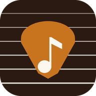

♪ ♫ ♪
Abra o app pelo link que o seu professor enviou no WhatsApp depois da aula.
Depois disso, é só tocar neste ícone: o app lembra do seu link.
Conecte-se ao Wi-Fi ou aos dados móveis para registrar o seu ensaio.